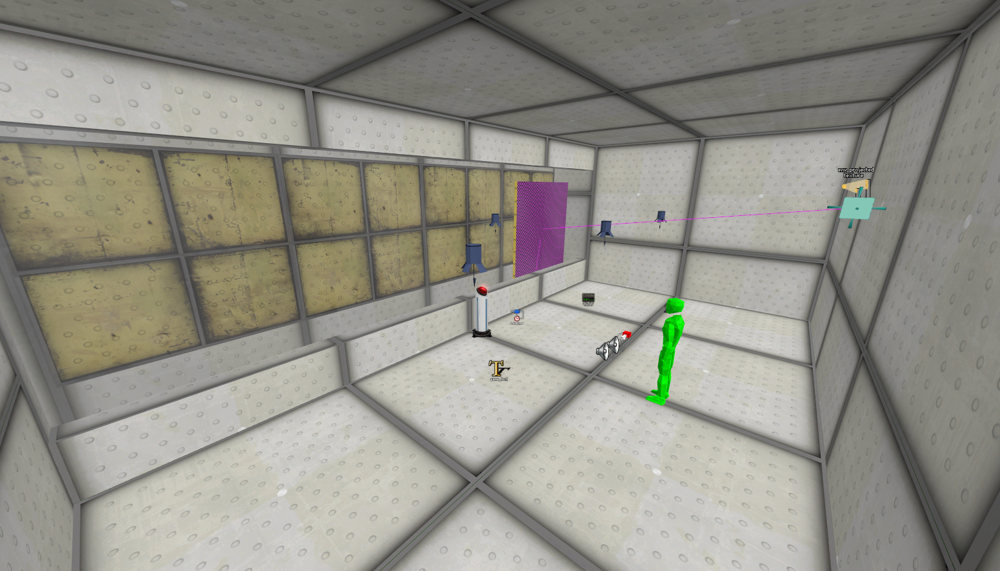
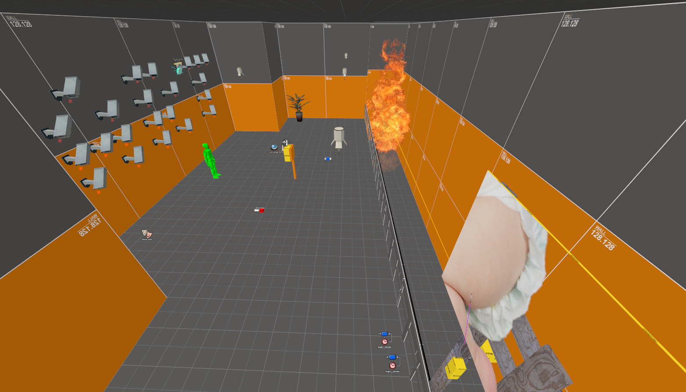

Baby Game
(M) babygame_a0.vmf - 00/00/0000
A very early iteration of the baby room that uses some Portal 2 textures and assets
Notables:
- Uses an old texture for the baby: "signage/noff/baby"
- A game_text entity with the text "We then move onto the HL2 map!". This implies that Half Life 2 was still part of the original Playtest Ending before they changed it

(M) babygame.vmf -
An earlier version of the Baby Game room
(!) This map appears in one of the trailers
Notables:
- A bunch of cameras on the back wall that spell out the word "ART"
- Contains a Water Cooler
- The Baby texture is improperly sized, and the old texture "signage/noff/baby" is still present on the back side


Category